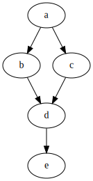

12. Алгоритъм на Уоршал и топологично сортиране
*** Алгоритъм на Уоршал и матрица на достижимост [5.4.2,
стр. 293]
Даден е ориентиран граф G с матрица на съседство A. Mатрица
A' се нарича матрица на достижимост когато:
- A'[i][j] = 1, тогава и само тогава, когато съществува път (с
каквато и да е дължина) между върховете i и j.
- A'[i][j] = 0, когато път между двата върха не съществува.
Графът G', чиято матрица на съседство е матрицата
A' се нарича транзитивно затворен граф на G.
Алгоритъм на Уоршал за намиране на транзитивно затваряне:
1. G' съдържа всички дъги на G.
2. За всеки три върха k, i, j на графа G, ако има дъги (i, k) и (k,
j), то добавяме (i, j) като ребро на графа G'.
for (k = 0; k < n; k++)
for (i = 0; i < n; i++)
{
if (A[i][k])
for (j = 0; j < n; j++)
if (A[k][j])
A[i][j] = 1;
}
Сложност на алгоритъма O(n3).
*** Транзитивна
редукция
Транзитивна
редукция за ориентирания
граф G се нарича граф G" с най-малко дъги, който запазва
свойството достижимост.
Пример:

*** Топологично сортиране [5.5.5,
стр. 320], [AL p.149]
Toпологично сортиране (Topological
sorting) на ориентиран ацикличен граф (Directed
acyclic graph - DAG) се нарича линейно нареден списък от
върховете му, такъв, че за всеки два върха i и j, за които има
път от i до j, върхът i е преди j.
За повечето ориентирани ациклични графи съществуват повече от един
такива списъци.
Пример:
(1, 2), (2, 3), (3, 6), (4, 1), (4, 5), (5, 2), (5, 3)
Алгоритъм 1:
1. Инициализираме Z като празен списък.
2. Избираме връх i без предшественици и го добавяме в края на
списъка Z.
3. Изключваме i от графа, както и всички ребра, инцидентни с него.
4. Повтаряме стъпка 2, докато не остане нито един връх.
-- Ако на стъпка 2 има повече от един връх без предшественици,
избираме произволен.
-- Ако на стъпка 2 няма нито един връх без предшественици, а в графа
има още върхове, то следва, че графът е цикличен, което противоречи
на условието и следователно не съществува топологично сортиране.
Първи вариант: 4, 1, 5, 2, 3, 6
Втори вариант: 4, 5, 1, 2, 3, 6

Обратното също е вярно: ако графът е цикличен, то на някоя стъпка от
алгоритъма задължително ще попаднем в описаната ситуация.
За всеки ацикличн граф има топологично сортиране. Ако обаче графът
съдържа цикъл, няма топологично сортиране, тъй като няма възел от
цикъла, който може да бъде преди останалите възли на цикъла при
подреждането. Следователно алгоритъмът за топологичното сортиране
може да се използва и за проверка дали ориентирани граф съдържа
цикъл и, ако не съдържа цикъл, да се получи топологично сортиране.
Сложност на алгоритъма O(n2).
Aко графът е представен чрез списък на наследниците (или списък на
предшествениците), то алгоритъмът може да се реализира с обща
сложност О(n+m).
Алгоритъм 2:
На всяка стъпка търсим връх без наследници и така получаваме
топологично сортиране на графа в обратен ред.


4, 5, 1, 2, 3, 6
Реализацията се извършва, като се използва обратният ход на
рекурсията във функцията за обхождане в дълбочина:
void DFS(unsigned i)
{
unsigned k;
used[i] = 1;
for (k = 0; k < n; k++)
if (A[i][k]
&& !used[k]) DFS(k);
cout << i + 1 <<
" ";
}
Сложност на алгоритъма О(n+m).
Визуализация
Видео-лекция
на дъска със надписи (англ.)
Видео-лекция
на слайдове с обяснения (англ.)
** Задача за намиране на всички пътища
Да се намери броя на пътищата между два върха на ориентиран граф.
Пример: Търси се колко пътища има от 1 до 6.

Ще приложим динамично оптимиране с рекурентна формула за броя на
пътищата p(x) до връх x:
p(x) = p(a1) + p(a2)
+ ... + p(an).
където a1, a2, ..., an
са предшественици на x (от които има дъги към x).
Изчисленията следват линейната наредба на топологично сортиране.

Така получаваме броя на пътищата от връх 1 до всички други върхове
на графа.

*** Пълно топологично сортиране
[5.5.6, стр. 322]
Mножеството от всички възможни списъци (топологични сортирания) се
нарича пълно топологично сортиране.
Задача: За даден граф да се намери пълно топологично
сортиране.
Алгоритъм: Ще приложим пълно изчерпване.
-- Изпробваме последователно всички възможни избори на начален връх
(ясно е, че всеки избор води до решение).
-- При разглеждане на връх ще го премахваме от графа и ще стартираме
рекурсивно функцията с модифицирания граф.
-- След връщане от рекурсията възстановяваме графа и повтаряме
същото със следващия възможен връх.
-- Дъното на рекурсията е, когато списъкът достигне броя на
върховете.
fullTopSort(count)
{
if (count == n)
{
Намерили_сме_топологично_сортиране_=>_отпечатваме_го;
return;
}
for (всеки връх без_предшественици)
{
премахваме_върха_от_графа;
fullTopSort(count + 1); /* рекурсия и
връщане */
възстановяваме_върха_в_графа;
}
}
*** Допълване на ацикличен граф
до слабо свързан [5.5.7, стр. 324]
Ориентиран граф е слабо свързан, ако всеки два върха i и j
са краища на поне един път (т.е. съществува поне един път от i до j
или от j до i). Когато в ориентиран граф за всеки два върха i, j
съществува път както от i до j, така и от j до i, то графът се
нарича силно свързан.
Задача: Даден е ориентиран ацикличен граф. С добавяне на дъги
искаме да построим граф с единствено топологично сортиране.
Друга формулировка на задачата: Да се допълни множеството от
ребра на ориентиран ацикличен граф, така че той да се превърне в
слабо свързан, като остане ацикличен.
Алгоритъм1: За всяко i != j точно един от двата елемента
A[i][j] и A[j][i] (матрица на съседство) да бъде равен на единица, а
другият - на нула.
а) Транзитивно затваряне;
b) за i != j, за които A[i][j] = 0 и и A[j][i] = 0, то променяме
A[i][j] = 1.
Алгоритъм 2:
a) Топологично сортиране (vi1, vi2,...,vin);
b) Допълване:
for (j = 0; j < n - 1; j++)
for (k = j + 1; k < n; k++)
if
(не_съществува_реброто_(vij, vik))
{ добавяме реброто (vij,vik);
}
Пример:
Добавяме дъги: (4, 2), (4, 3), (4, 6), (1, 5), (1, 3), (1, 6), (5,
6), (2, 6)
Сложност на алгоритъма O(n2).
Програмиране = ++Алгоритми; (Programming = ++Algorithms;)